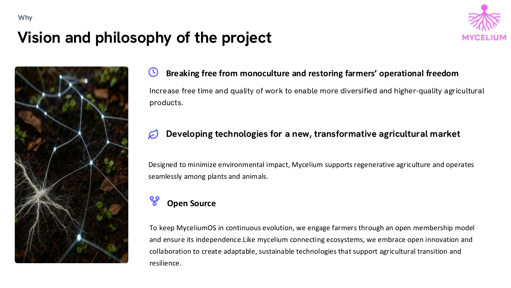
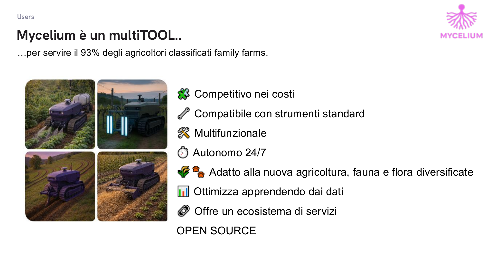
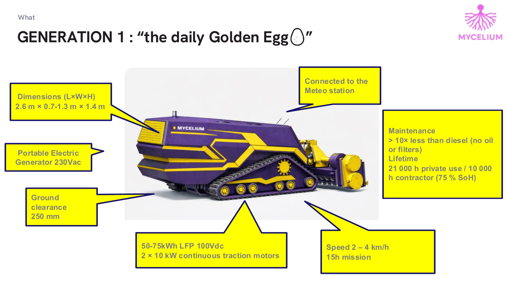
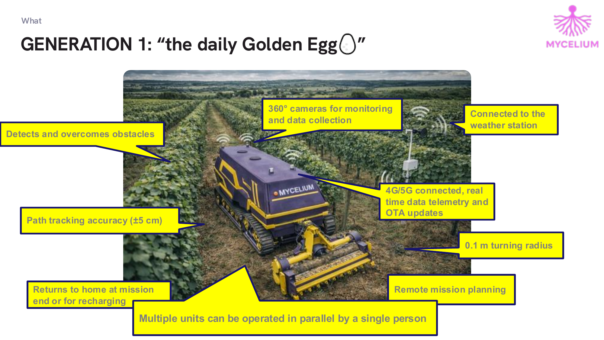
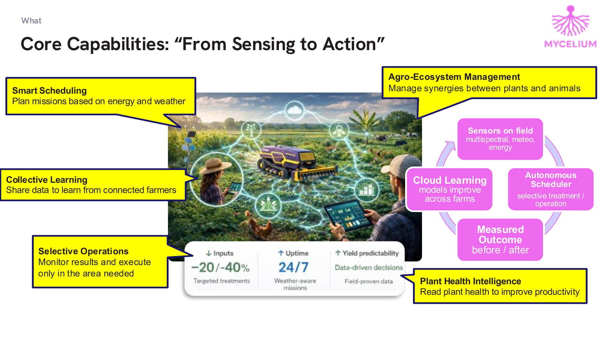
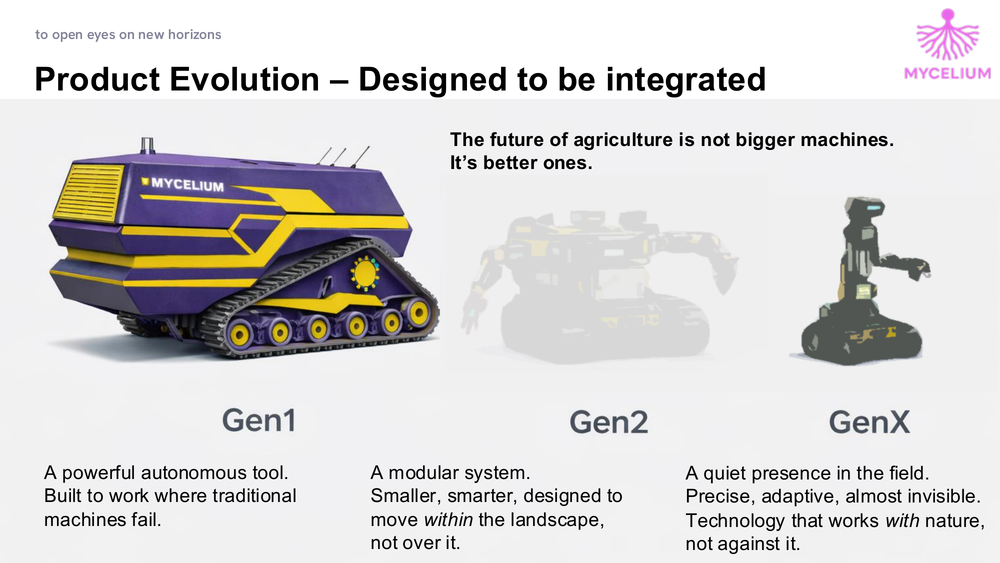
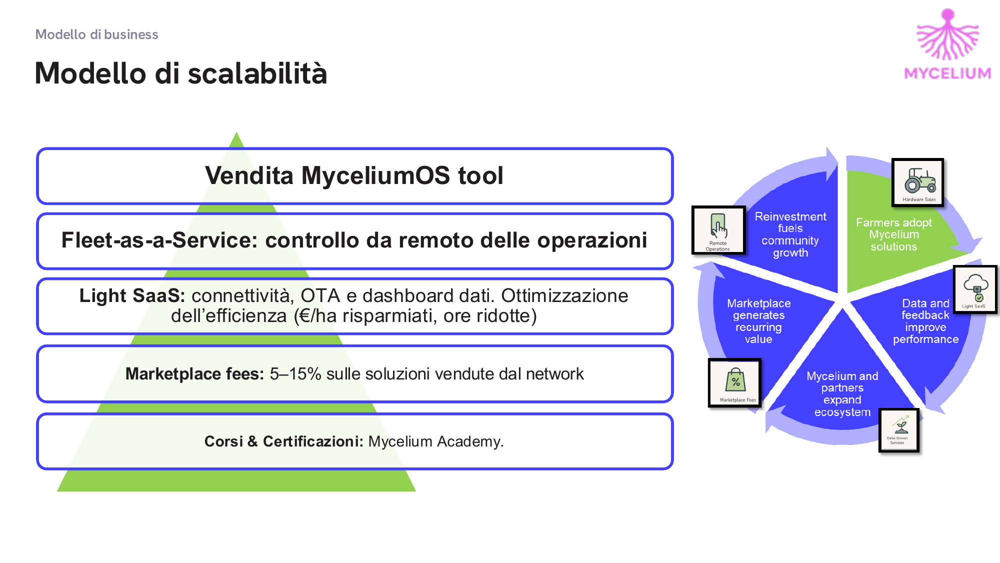

Labor shortage, aging operators, rising energy costs, climate instability, chemical dependency and economic fragility are pushing a model that is centralized, capital intensive, mechanically dependent and operationally rigid to its breaking point.
This model is failing.
Forte domanda di automazione low-cost e sostenibile. Italia primo mercato UE bio.
L'industria 4.0 applicata all'agricoltura. In crescita costante dal 2024.
Età media degli agricoltori italiani: 58 anni. L'automazione è una necessità.
GNSS auto-steering, farm data platform, sensori remoti: tutto pensato per grandi trattori e grandi estensioni. Ma la viticoltura, la frutticoltura, le colture su terreni con interfilare stretto e dislivelli complessi restano escluse.
È il momento del "purple tool" che il mondo non ha ancora immaginato.

Aumentare il tempo libero e la qualità del lavoro per consentire prodotti agricoli più diversificati e di qualità superiore.
Progettata per minimizzare l'impatto ambientale, Mycelium supporta l'agricoltura rigenerativa e opera in armonia tra piante e animali.
Per mantenere MyceliumOS in continua evoluzione, coinvolgiamo gli agricoltori attraverso un modello di membership aperto. Come il micelio che connette gli ecosistemi, abbracciamo innovazione aperta e collaborazione.
...per servire il 93% degli agricoltori classificati family farms.

95.000€ per il tool e la stazione di ricarica. Leasing da ~1.250€/mese o noleggio FaaS a 100€/h.
Attacco a 3 punti anteriore e posteriore, 1000 kg CAT I/II. Controllo attrezzi via ISOBUS CAN.
0% intervento umano durante la missione. Basta impostare la missione tramite HMI. Ritorna alla base per la ricarica.
Semina, monitoraggio, trattamenti mirati, lavorazione del terreno. Cambio attrezzi automatico.
Camere 360°, connessione 4G/5G, telemetria in tempo reale, aggiornamenti OTA. Cloud learning tra aziende agricole.
Ecosistema aperto di servizi e soluzioni condivise dalla comunità di agricoltori.



Pianifica missioni basate su energia e meteo.
Condividi dati per imparare da agricoltori connessi. Cloud learning che migliora tra le aziende.
Monitora i risultati ed esegui solo dove serve. -20/-40% input mirati.
Leggi la salute delle piante per migliorare la produttività. Outcome misurato prima/dopo.
Gestisci sinergie tra piante e animali. Sensori multispettrali, meteo, energia.
Uptime 24/7 con decisioni data-driven e prevedibilità della resa basata su dati di campo.

Un tool autonomo potente. Costruito per lavorare dove le macchine tradizionali non possono.
Un sistema modulare. Più piccolo, più intelligente, progettato per muoversi nel paesaggio, non sopra di esso.
Una presenza silenziosa nel campo. Preciso, adattivo, quasi invisibile. Tecnologia che lavora con la natura.

95.000€ il tool + stazione di ricarica. 600€/anno abbonamento piattaforma.
Controllo da remoto delle operazioni. Noleggio con operatore a 100€/h.
Connettività, OTA e dashboard dati. Ottimizzazione dell'efficienza.
5-15% sulle soluzioni vendute dal network. Corsi e certificazioni Mycelium Academy.
Unisciti a noi nel rivoluzionare l'agricoltura. Insieme possiamo costruire sistemi agricoli resilienti, ridurre l'impatto ambientale e promuovere un ecosistema di tecnologia e pratiche rigenerative.
Viale Virgilio, 50/C, 41123 Modena MO